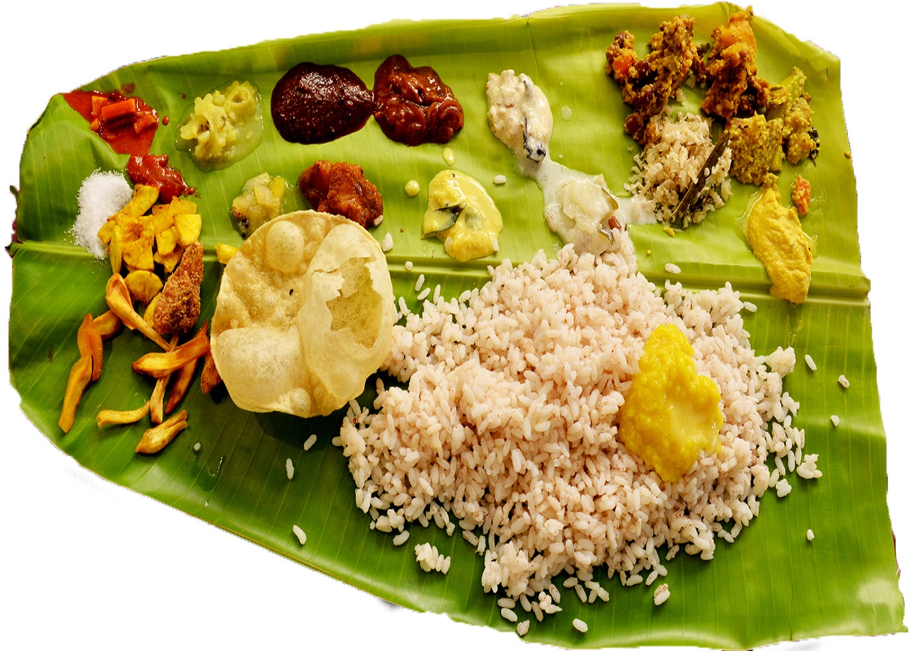

Kerala is probably the greenest place you will ever see, it is one of the 10 paradises in the world. The coconut palms, the red tiles houses, the innumerable lakes and beaches will remain long lasting impressions to any visitor. The colourful festivals, various types of dances, martial arts and wildlife sanctuaries are the other attractions. Location – Kerala is a narrow strip of land locates on the south western edge of the Indian subcontinent. It is placed between the Western Ghats mountain range on the East and the Arabian Sea on the West